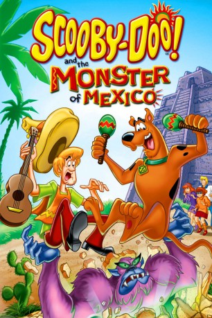
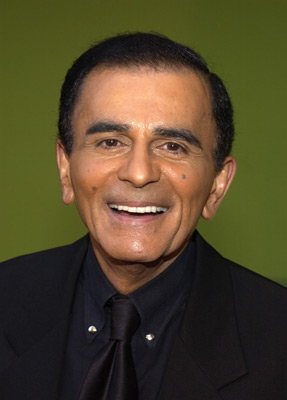

#2471 Scooby-Doo und das Monster von Mexiko
Alternativ: Scooby-Doo and the Monster of Mexico (Originaltitel)
 
 IMDB-Wertung: 6.5 / 10
IMDB-Wertung: 6.5 / 10  Metascore: 0
Metascore: 0 
Scooby-Doo und seine Gang machen sich auf einen Trip nach Mexiko, um dort einen alten Freund von Fred zu besuchen. Doch schon nach kurzer Zeit entpuppt sich die Reise als nächstes spannendes Abenteuer: Freds Dorf wird immer wieder von einem Monster, dem Chupacabra, heimgesucht. Wird es Scooby-Doo und seinen Freunden gelingen, dem finsteren Ungetüm das Handwerk zu legen?
Jahr: 2003
Dauer: 75 Minuten
FSK:
Land: USA Studio: Turner Home EntertainmentTonspuren: DD2.0 - ,
Untertitel:
Auflösung: 1080p (1920x1080) Größe: 4003 MB
Genre: Animation/Trick, Komödie, Mystery
Regisseur: Scott Jeralds
Drehbuch: Douglas Wood
Soundtrack: Rich Dickerson, Gigi Meroni
Darsteller:
-  Casey Kasem als Shaggy
 Frank Welker als Fred / Scooby-Doo
Frank Welker als Fred / Scooby-Doo- Jesse Borrego als Luis Otero / Musician #2 / Suspicious Tourist
 Maria Canals-Barrera als Sofia Otero / Old Woman #2
Maria Canals-Barrera als Sofia Otero / Old Woman #2- Castulo Guerra als Señor Fuente / Man #1
 Benito Martinez als El Curandero / Man #2
Benito Martinez als El Curandero / Man #2- Candi Milo als Charlene Otero / Museum Guide / Old Woman #1
- Rita Moreno als Doña Dolores / Woman #3
- Eddie Santiago als Alejo Otero / Musician #1
 Rip Taylor als Mr. Smiley / Ghost of Señor Otero
Rip Taylor als Mr. Smiley / Ghost of Señor Otero Michael Forest als El Chuprecabra
Michael Forest als El Chuprecabra- Nicole Jaffe als Velma
- Heather North als Daphne
- Brandon Gonzalez als Jorge Otero
- Darlene Mendoza als Natalia Otero / Little Girl
- Allyse Rivera als Carolina Otero
- Casey Sandino als Sebastian Otero / Little Boy
- Maria Carmen als Soundtrack
Datei: X:\Kinder Collections\Scooby-Doo\Scooby-Doo und das Monster von Mexiko (2003, FSK, 1920x1080).mkv seit 12.11.2015
Festplatte: Kinder-Filme+Trick
 Es gibt insgesamt 17 Filme in der Gruppe 'Kinder Collections\Scooby-Doo'
Es gibt insgesamt 17 Filme in der Gruppe 'Kinder Collections\Scooby-Doo'